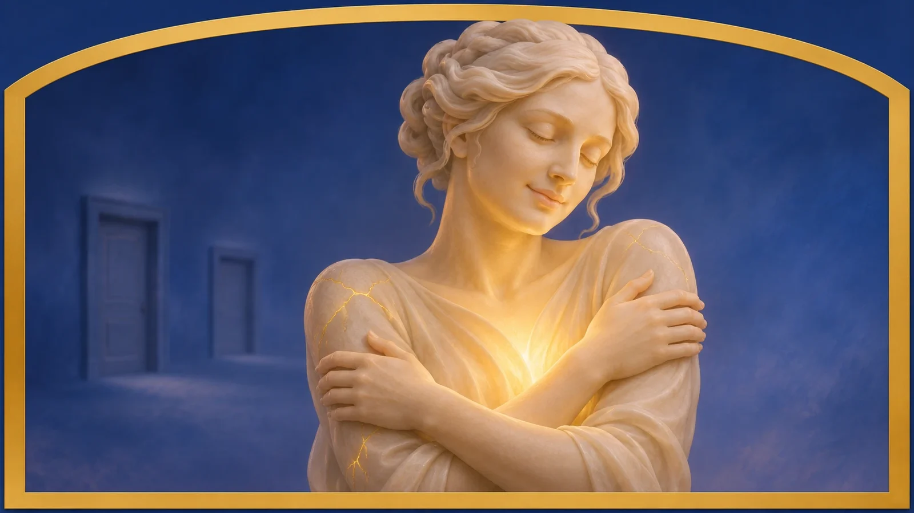

في حياة كل واحدة منا حكاية كلما تذكّرتها شعرت بشيئين معاً: ألم، وشيء حلو. لا تعرفين: هل تحزنين أم تفرحين؟
ربما علاقة تغيّرت، أو نقلٌ من عمل، أو قرار كلّفك كثيراً. كلما حاولتِ أن تضعيها في خانة، خرجت منها. إن قلتِ «كانت حلوة» شعرتِ أنك تكذبين على نفسك، وإن قلتِ «كانت سيئة» شعرتِ أنك تظلمين شيئاً فيها.
هذه هي الحكاية المربِكة. وفي هذا المقال نتعلّم معاً كيف ننظر إليها بعين جديدة.
لماذا تتشدّ العين إلى الألم؟
العطايا الواضحة تجدها العين بسهولة. أما الحكاية المربكة، فالعين تتشدّ فيها إلى الألم أكثر.
السبب أن العقل اللاواعي، حين يوجعنا أحد، يفتح ملفاً ويضع عليه علامة «ملف مؤلم». وكلما تذكّرنا الحكاية، يفتح هذا الملف أولاً ويغلق باقي الصور. فلا نرى إلا جزءاً واحداً منها.
الوجع القديم يسكن الجسد
الحكاية المؤلمة لا تبقى في الذاكرة فقط، تسكن الجسد أيضاً. كل مرة تتذكرين فيها ما حدث، يعيش جسدك الموقف من جديد: نفس الانقباض في الصدر، ونفس الغصّة في الحلق، ونفس الكيمياء التي سرت فيكِ يومها. الموقف انتهى منذ سنين، لكن الجسد ما زال يعيشه كأنه يحدث الآن.
ومع التكرار يحفظ الجسد هذا الشعور، ويتعوّد عليه، حتى يصير جزءاً من «الطبيعي» الذي يبحث عنه. فيلتقط من يومك ما يشبهه: كلمة تُذكّره، أو موقف صغير يوقظه، فيشتعل الوجع القديم كله دفعة واحدة، ويأخذك معه.
وهنا الخطوة الأولى في التحرر: أن تلاحظيه. أن تقولي في اللحظة التي يشتعل فيها: «ده الوجع القديم بيصحى… أنا شايفاه». في اللحظة التي تلاحظينه فيها، تخرجين منه خطوة. لم تعودي أنتِ الوجع، صرتِ الوعي الذي يراه. والوجع الذي يُرى بهدوء، دون مقاومة ودون استسلام، يبدأ في الذوبان.
أنتِ لستِ حكايتك
كثيرون منا، دون أن ننتبه، نبني هويتنا على جرحنا: «أنا اللي اتظلمت»، «أنا اللي محدش وقف جنبها»، «أنا اللي اتخذلت». وتصير الحكاية جزءاً منّا، نحكيها ونعيدها، ونخاف أن نتركها، لأننا لا نعرف من سنكون بدونها.
والحقيقة أن الحكاية حدثت لكِ، لكنها ليست أنتِ. أنتِ أوسع من أي شيء مرّ بكِ. أنتِ التي عاشت الحكاية، وتألمت، وعبرت، وما زالت هنا. وحين تفصلين بين نفسك وبين الحكاية، تستطيعين لأول مرة أن تنظري إليها من الخارج، فترين فيها ما لم تكوني ترينه وأنتِ غارقة داخلها.
ولذلك لن نحاول هنا أن نغيّر الحكاية، ولا أن نقنع أنفسنا أنها كانت حلوة. سنفعل شيئاً واحداً فقط: نسأل سؤالاً لم نسأله من قبل.
قبل السؤال: لا شكر بالعافية
لا شكر يُقال لأحد، ولا «الحمد لله» تُقال على أي حكاية، إلا إذا كنتِ تشعرين بها فعلاً من قلبك. الموضوع ليس بالعافية.
إن كانت الحكاية ما زالت توجعك، وشعرتِ أن الشكر سيخرج كلاماً بلا مشاعر، فلا تطبّقي التمرين الآن. نحن نريد الحقيقي فقط، حتى لو كان بسيطاً أو صغيراً. وحين يظهر الألم نترك له مكانه: لا نطرده، ولا نغطّيه، ولا نمثّل على أنفسنا.
والمشاعر لا تقفز. لا يمكنكِ أن تنتقلي من الغضب إلى الامتنان في خطوة واحدة، ولو حاولتِ ستشعرين أنك تكذبين على نفسك. لكن يمكنكِ أن تصعدي درجة واحدة: من الغضب إلى الضيق، ومن الضيق إلى التعب، ومن التعب إلى شيء من الراحة. وكل درجة تصعدينها بصدق هي نصر حقيقي، وتغيير حقيقي في ذبذبتك وفي ما تجذبينه إلى حياتك. الصدق أهم من السرعة.
حكاية الخيّاطة: الأوان لا يفوت
كانت عندي عميلة تحب الخياطة. سألتها عن عطية في حياتها، فقالت: «أحسن حاجة إني بعرف أخيّط».
أمسكنا الخيط من أوله: من أوصل لها هذه العطية؟ تذكّرت أنها تعلّمت على ماكينة قديمة عند خالتها، وأن خالتها أجلستها بجانبها وهي في الثانية عشرة وقالت: «سيبي الإبرة تمشي، ما تزقّيش».
واكتشفت أنها لم تقل لخالتها شكراً ولو مرة. وخالتها توفيت منذ سنين. فجلست يومين تسأل نفسها: هل فات الأوان؟
العطية ممتدة، والأوان لا يفوت أبداً. تذكّرت أن عندها فستاناً قديماً لخالتها، فصنعت منه مخدة صغيرة وأهدتها لابنة خالتها وقالت: «المخدة دي من فستان ماما، وأنا اتعلمت منها كل غرزة». قرأتا الفاتحة معاً على روحها، وأخرجت لها صدقة، ودعت لها كثيراً. وتذكّرت ابنة الخالة أشياء حلوة عن أمها كانت قد نسيتها.
العطية لم تكتمل حين تذكّرتها، بل حين أمسكت الخيط كله وعبّرت عنه بفعل، وكأنها أغلقت الدائرة.
حين تكون الحكاية مؤلمة فعلاً: النقل بعد تسع سنين
كانت مشتركة في البرنامج التدريبي تعمل في قسم معيّن منذ تسع سنين، ونُقلت في يوم إلى قسم آخر دون أن يسألها أحد. شعرت أنها انتُزعت من مكانها، وأن تسع سنين من عمرها مُسحت بقرار على ورقة. وظلت أسابيع تذهب إلى العمل وتقول لنفسها: «أنا هنا غلط».
حين اخترنا هذه الحكاية لنعمل عليها، ظهر الوجع كله: الإهانة والغضب والخوف. سألتها: «فين النور في الحكاية دي؟ شيء واحد بس». فقالت بصراحة: «مفيش».
وبالتطبيق اليومي، جاء في بالها يوماً وجه زميلة جديدة ظلت معها حتى آخر اليوم تشرح لها النظام الجديد، دون أن تتعالى عليها، وناولتها كوب ماء وهي تبكي ولم تسألها عن شيء.
فلما سألتها بعدها «فين النور؟» قالت: «اكتشفت إن فيه ناس بتبقى جنبي من غير ما أطلب».
لم نقل إن النقل كان هدية. كان مؤلماً فعلاً، ولم تكن مخطئة حين حزنت. لكن الحكاية كان فيها شيئان، وعينها كانت ترى الوجع فقط. لم ننكر الألم، ولم نغطِّه، لكننا جعلنا العين ترى المنحة التي في المحنة.
تمرين: رسالة من بعد العاصفة
تخيّلي أن أصعب حكاية تعيشينها الآن انتهت، وأنكِ بعدها بسنين تجلسين في مكان هادئ وتحكين لنفسك عنها. اكتبي لنفسك رسالة تجيب عن ثلاثة أسئلة:
- ماذا تعلّمتِ من هذه الحكاية؟
- من وقف بجانبك وأنتِ لم تنتبهي؟
- ماذا تقدّرين في نفسك الآن بعد أن انتهت؟
وانتبهي لأمرين:
- الشكر يكون لنفسك وللذين وقفوا معك. أما من آذاك، فليس مطلوباً منكِ أن تشكريه، فهذه مرحلة أخرى، ولا مكان لها في هذه الرسالة.
- ابحثي عن الناس الصغار أيضاً، لا عن الكبار فقط: من سألت عنكِ وأنتِ متعبة، وزميل حمل عنكِ عملاً، وكلمة طيبة سمعتِها وقتما كنتِ تحتاجينها. الخيط الواحد له خيوط فرعية كثيرة لا ننتبه لها.
الورقة في الجاكيت القديم
كانت مشتركة تنظّف دولابها، فوجدت ورقة مطوية في جاكيت قديم. فتحتها، فإذا هي ورقة كتبتها بنفسها في أصعب أيام حياتها، أيام طلاقها، ونسيتها تماماً. ومن بين ما كتبته: «مش هقدر أعدّي من كل ده».
وقفت مذهولة تنظر إلى نفسها: واقفة على قدميها، تنظّف دولابها، وفي يدها كوب شاي، وقد انتهى كل شيء. ومرّ أمام عينيها كشريط سينما: جارتها التي كانت تترك لها الطعام وهي في العمل، وأختها التي كانت تطمئن عليها كل صباح.
اكتشفت أنها رأت نفسها ضعيفة وهي قوية. فقلت لها: «اكتبي في الورقة نفسها، بلسانك لنفسك: عدّيتي، وكنتي أقوى من اللي كتبتيه، وطلعتي أقوى مما كنتي تتصوري».
ونحن في وسط العاصفة لا نرى شيئاً، فالموج عالٍ والرياح عاتية. لكن بعد أن تهدأ العاصفة نرى ما كان بداخلها: كما كان فيها رياح شديدة، كان فيها نور ودليل مشينا نحوه حتى خرجنا.
الذهب الذي كشفته المحنة
في داخل كل واحدة منا مناطق لا نراها. نخبّئ فيها ما يوجعنا وما نخجل منه، لكننا نخبّئ فيها أيضاً، دون أن ندري، أجمل ما فينا: قوة لم نختبرها، وصبراً لم نعرف أننا نملكه، وقدرة على النهوض لم نكن نصدّقها.
والمحنة كثيراً ما تكون هي اليد التي تحفر وتُخرج هذا الذهب إلى النور. صاحبة الورقة لم تكن تعرف أنها قوية حتى احتاجت أن تكون قوية. وصاحبة حكاية النقل لم تكن تعرف أن الحياة ترسل لها سنداً دون أن تطلب، حتى وجدت نفسها وحيدة في مكان جديد.
فاسألي نفسك: ما الذي عرفته عن نفسي في هذه الحكاية ولم أكن أعرفه قبلها؟ هذا هو الذهب. وهذا ما يبقى معكِ بعد أن يذهب الوجع.
كلمة لنفسك
بعد كل حكاية صعبة، هناك شخص واحد يستحق شكراً لم يسمعه أبداً: أنتِ.
ضعي يدك على قلبك، وقولي لنفسك بصوت هادئ:
«شكراً لأنك عدّيتي. شكراً لأنك فضلتي واقفة. أنا مسامحة نفسي على كل مرة كنت فيها قاسية عليكي. أنا في أمان دلوقتي، وأنا أستحق السلام».
وقوليها كل صباح لأسبوع، أمام المرآة إن استطعتِ، وانظري في عينيك وأنتِ تقولينها. في الأيام الأولى قد تشعرين أنها كلمات غريبة. ثم يبدأ شيء في داخلك يصدّقها.
إن شعرتِ بثقلٍ أثناء التمرين
إن طلع معكِ شعور ثقيل جداً وأنتِ تطبّقين، خذي نفساً عميقاً، ولا تُجبري نفسك أبداً. أجّلي التمرين لوقت آخر، وكرّريه حين تشعرين أنك قادرة.
أسئلة شائعة
هل رؤية المنحة تعني أن ما حدث لي كان صحيحاً؟
لا. يمكن أن يكون ما حدث ظلماً ومؤلماً فعلاً، وأن يكون فيه في الوقت نفسه شيء تعلّمتِه أو أشخاص وقفوا معك. رؤية المنحة لا تبرّر الأذى.
هل يجب أن أسامح من آذاني؟
ليس في هذا التمرين. الشكر هنا لنفسك ولمن ساندك فقط. أما المسامحة فمرحلة أخرى لها وقتها.
ماذا أفعل إن لم أجد أي نور في الحكاية؟
هذا طبيعي في البداية. لا تُجبري نفسك. التطبيق اليومي والوقت يجعلان العين تلتقط ما لم تكن تراه، كما حدث مع صاحبة حكاية النقل.
هذا المقال من رحلة «عين صاحية»: كورس مكثّف ينقلك من مشاعر النقص إلى الامتنان العميق والرضا والقبول والسلام.
تعرّفي على كورس عين صاحيةوإن كانت حكايتك المؤلمة ما زالت تثقلك وتحتاجين من يمشي معكِ فيها خطوة بخطوة:
احجزي جلسة فردية مع د. مرفتالمحتوى للتطوير الذاتي والوعي، وليس بديلاً عن التشخيص أو العلاج الطبي أو النفسي.